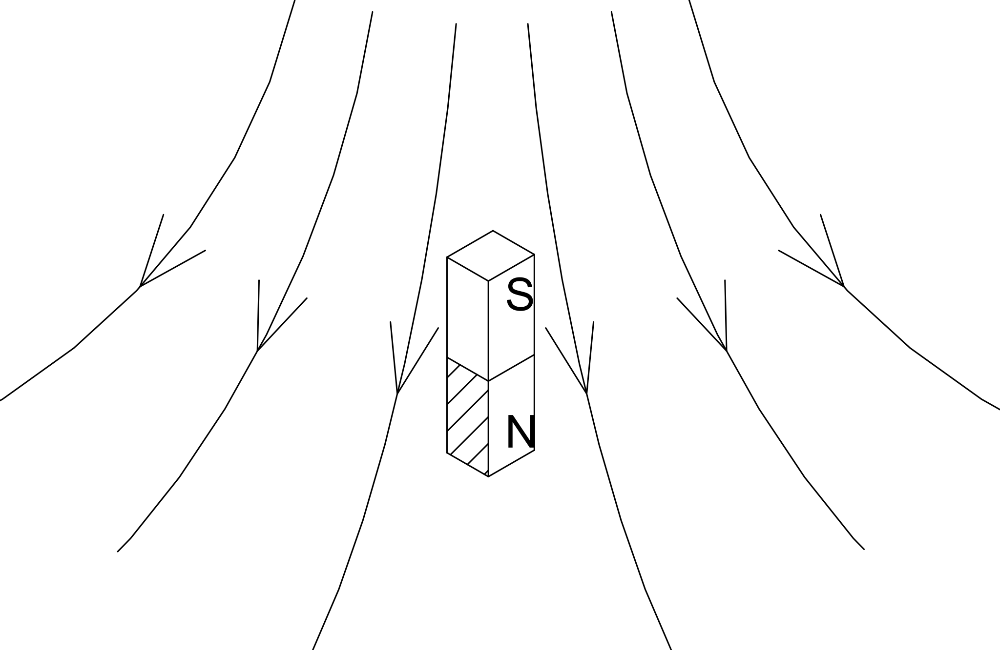
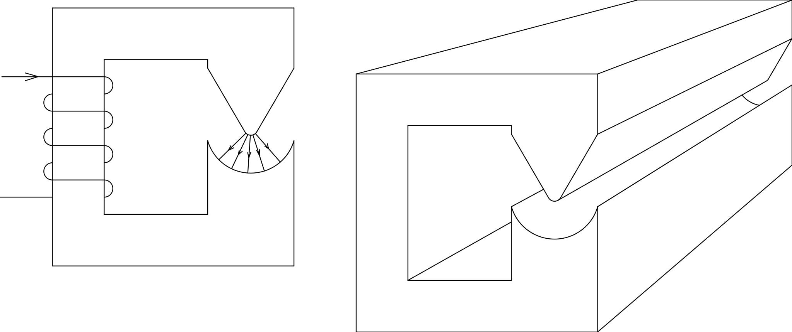
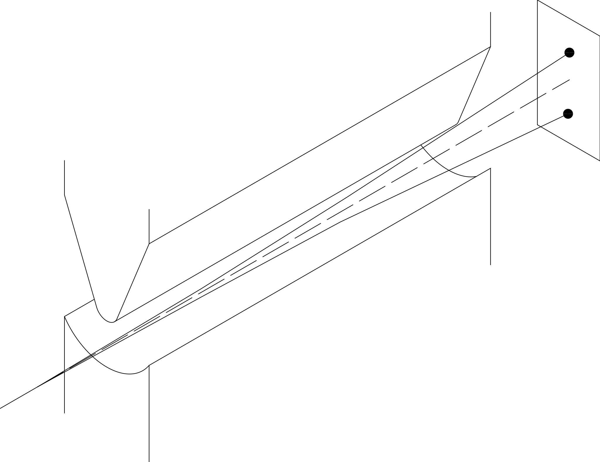
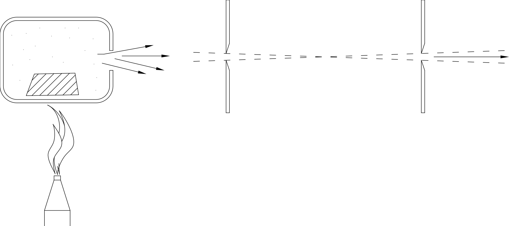
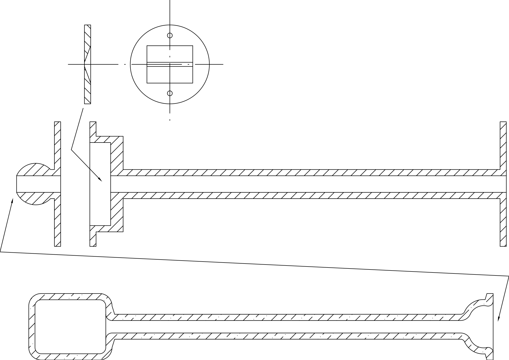
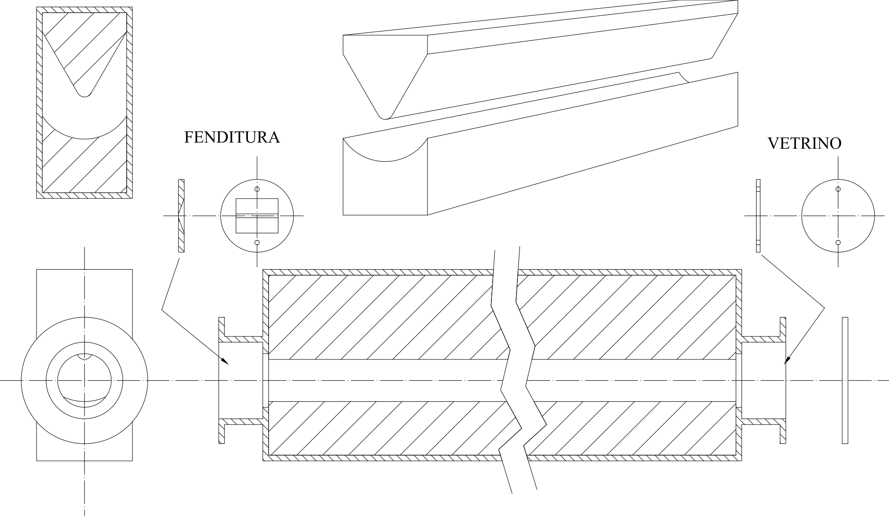
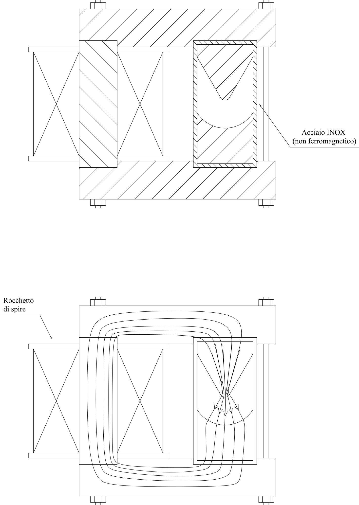
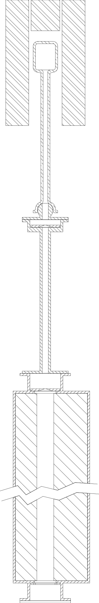

Capitolo 1Chapter 1
Esperimento di Stern-GerlachThe Stern–Gerlach Experiment
Questo esperimento fu ideato da Stern e da Gerlach nel 1921 con lo scopo di misurare il momento magnetico dei singoli atomi. Le prime prove furono effettuate con atomi di argento. I risultati andarono al di là delle aspettative, facendo emergere comportamenti inattesi, che oggi possiamo usare come punto di partenza per lo studio della Meccanica Quantistica.This experiment was devised by Stern and Gerlach in 1921 with the aim of measuring the magnetic moment of individual atoms. The first trials were carried out with silver atoms. The results went beyond every expectation, bringing to light unexpected behaviours that today we can use as a starting point for the study of Quantum Mechanics.
Descrizione dell’esperimento.Description of the experiment.
Un atomo con il suo momento magnetico m, può essere immaginato come una piccola calamita (fig. 1). Se la calamita viene immersa in un campo magnetico sui suoi poli si esercitano delle forze opposte. Se il campo è disuniforme le forze non sono bilanciate e la calamita accelera. La direzione verso la quale la calamita accelera dipende dal gradiente del campo e dall’orientazione del momento magnetico m, ad esempio nella figura la calamita accelera verso l’alto.An atom with its magnetic moment m can be pictured as a small magnet (fig. 1). If the magnet is placed in a magnetic field, opposite forces act on its poles. If the field is non-uniform the forces are not balanced and the magnet accelerates. The direction in which the magnet accelerates depends on the field gradient and on the orientation of the magnetic moment m; for example, in the figure the magnet accelerates upwards.

La figura 2 mostra il circuito magnetico che permette di realizzare un campo disomogeneo nel traferro.Figure 2 shows the magnetic circuit that produces a non-uniform field in the air gap.

L’esperimento di Stern-Gerlach si realizza facendo passare un fascio di atomi di argento, con una determinata velocità v, attraverso il traferro sagomato (fig. 3).The Stern–Gerlach experiment is carried out by sending a beam of silver atoms, with a given velocity v, through the shaped air gap (fig. 3).

Sotto l’azione del campo magnetico gli atomi vengono deflessi e alla fine del percorso si depositano su un vetrino. Dall’entità della deflessione misurata e dal gradiente del campo si può risalire al momento magnetico.Under the action of the magnetic field the atoms are deflected and, at the end of their path, are deposited on a glass slide. From the measured amount of deflection and the field gradient one can determine the magnetic moment.

Il fascio di atomi viene generato vaporizzando dell’argento all’interno di un fornetto sul quale è praticato un piccolo foro (fig. 4). Gli atomi che fuoriescono dal foro passano attraverso una coppia di fenditure che servono a focalizzare il fascio. Tutto il percorso, dal fornetto fino al vetrino, viene realizzato nel vuoto, per impedire che gli atomi urtino contro le molecole di cui è costituita l’aria fermandosi prima di arrivare al vetrino.The atomic beam is generated by vaporising silver inside a small furnace with a tiny hole (fig. 4); the atoms that escape through the hole pass through a pair of slits that focus the beam. The whole path, from the furnace to the glass slide, is kept under vacuum, to prevent the atoms from colliding with the molecules that make up the air and stopping before they reach the slide.
Descrizione dell’apparato sperimentale.Description of the experimental apparatus.
Le figure che seguono riportano alcuni disegni di un apparato sperimentale progettato in bozza nel laboratorio didattico LAFIDIN.The following figures show some drawings of an experimental apparatus designed in draft form in the LAFIDIN teaching laboratory.
Nella figura 5 sono rappresentati la camera dove viene vaporizzato l’argento e un tubo sul quale viene montata la prima fenditura di collimazione del fascio. La camera di vaporizzazione è realizzata in quarzo perché deve resistere alla temperatura di fusione dell’argento che è di circa mille gradi centigradi. Il riscaldamento avviene mediante un fornetto elettrico a resistenza all’interno del quale è disposta la camera di quarzo.Figure 5 shows the chamber where the silver is vaporised and a tube on which the first beam-collimating slit is mounted. The vaporisation chamber is made of quartz, because it must withstand the melting temperature of silver, which is about one thousand degrees Celsius. Heating is provided by an electric resistance furnace inside which the quartz chamber is placed.

Nella figura 6 si rappresenta la camera che racchiude le espansioni polari. Questa camera è stata progettata in modo da ridurre al minimo il volume di vuoto per poter usare una pompa da vuoto di piccole dimensioni. La lunghezza delle espansioni polari è stata scelta di sessanta centimetri, perché la pompa che abbiamo a disposizione permette di raggiungere un vuoto tale che il cammino libero medio degli atomi di argento è di circa un metro, quindi la lunghezza totale del fascio atomico, dal fornetto al vetrino non può superare il metro. All’ingresso della camera è montata la seconda fenditura di collimazione, ed all’uscita è disposto il vetrino. La distanza tra le due fenditure ed il loro spessore sono stati scelti in modo che l’angolo di apertura del fascio sia molto più piccolo dell’angolo di deflessione. La sagoma delle espansioni polari è progettata in modo da ottenere la massima deflessione possibile.Figure 6 shows the chamber enclosing the pole pieces. This chamber was designed to minimise the vacuum volume, so that a small vacuum pump could be used. The pole pieces were chosen to be sixty centimetres long, because the pump we have available reaches a vacuum such that the mean free path of the silver atoms is about one metre; therefore the total length of the atomic beam, from the furnace to the slide, cannot exceed one metre. The second collimating slit is mounted at the entrance of the chamber, and the glass slide is placed at the exit. The distance between the two slits and their thickness were chosen so that the beam’s angle of divergence is much smaller than the angle of deflection. The shape of the pole pieces is designed to obtain the greatest possible deflection.

Nella figura 7 è riportato il circuito magnetico completo che permette di realizzare la configurazione di campo. Si osservi che la camera che contiene le espansioni è fatta di acciaio inox, questo materiale non è ferromagnetico e quindi non costituisce un corto circuito per il flusso magnetico.Figure 7 shows the complete magnetic circuit that produces the field configuration. Note that the chamber containing the pole pieces is made of stainless steel; this material is not ferromagnetic and therefore does not short-circuit the magnetic flux.

Nella figura 8 si mostrano tutti gli oggetti assemblati e si descrivono le varie operazioni che compongono l’esperienza.Figure 8 shows all the parts assembled and describes the various steps of the experiment.

{kind=link}
Una polvere di argento viene depositata nella camera di quarzo, la quale viene poi agganciata al resto dell’apparecchiatura mediante un raccordo sferico.Silver powder is placed in the quartz chamber, which is then connected to the rest of the apparatus by a spherical joint.
Viene attivata la pompa da vuoto che porta la pressione a circa 2⋅10-5 bar, in modo da avere un cammino libero medio per gli atomi di argento di circa un metro.The vacuum pump is switched on and brings the pressure down to about 2⋅10-5 bar, so that the mean free path of the silver atoms is about one metre.
Si alimenta il fornetto e dopo un po’ di tempo la camera di quarzo raggiunge la temperatura di fusione dell’argento, circa mille gradi centigradi.The furnace is powered and, after some time, the quartz chamber reaches the melting temperature of silver, about one thousand degrees Celsius.
L’argento fonde e, trovandosi a pressione quasi zero, bolle. Gli atomi vengono proiettati in tutte le direzioni, alcuni attraversano le due fenditure e formano un fascio ben collimato.The silver melts and, being at almost zero pressure, boils. The atoms are ejected in all directions; some pass through the two slits and form a well-collimated beam.
Gli atomi che hanno attraversato le due fenditure passano sotto le espansioni polari, vengono deflessi, e alla fine del loro cammino si depositano su un disco di vetro che è posto all’estremità dell’apparato.The atoms that have passed through the two slits travel beneath the pole pieces, are deflected, and at the end of their path are deposited on a glass disc placed at the far end of the apparatus.
Dopo un certo tempo si spegne il fornetto, si fa entrare aria nelle camere e si preleva il vetrino sul quale è possibile misurare la deflessione dovuta al momento magnetico degli atomi.After a certain time the furnace is switched off, air is let into the chambers, and the glass slide is removed, on which the deflection caused by the atoms’ magnetic moment can be measured.
Risultati sperimentali.Experimental results.
Osservando il vetrino si nota che il fascio atomico si è diviso in due parti, una parte deflessa verso il basso ed un’altra verso l’alto. Lo spostamento dei due fasci è di circa sette millimetri rispetto alla posizione centrale. Dai valori del gradiente di campo e dello spostamento si risale al momento magnetico dei singoli atomi.Looking at the slide, one sees that the atomic beam has split into two parts, one deflected downwards and the other upwards. The displacement of the two beams is about seven millimetres from the central position. From the values of the field gradient and of the displacement, the magnetic moment of the individual atoms is obtained.
Interpretazione dei risultati.Interpretation of the results.
Il fatto che il fascio si divide in due fasci distinti appare molto strano dal punto di vista della meccanica classica.The fact that the beam splits into two distinct beams appears very strange from the point of view of classical mechanics.
Gli atomi che escono dal fornetto dovrebbero avere un momento magnetico orientato in modo casuale, alcuni verso l’alto altri verso il basso, a sinistra, a destra, a quarantacinque gradi ed in tutte le possibili angolazioni. Gli atomi che hanno momento magnetico inclinato rispetto alla verticale dovrebbero essere deflessi di meno, quelli con momento magnetico orizzontale non dovrebbero essere deflessi affatto, ed in definitiva sul vetrino si sarebbe dovuto ottenere una macchia distribuita. Il fascio si sarebbe dovuto solo allargare e non dividere.The atoms leaving the furnace should have magnetic moments oriented at random — some upwards, some downwards, to the left, to the right, at forty-five degrees and at every possible angle. Atoms whose magnetic moment is tilted with respect to the vertical should be deflected less, those with a horizontal magnetic moment should not be deflected at all, and in the end a spread-out smear should have appeared on the slide. The beam should merely have broadened, not split.
L’osservazione sperimentale ci mostra che, quando misuriamo la componente zeta del momento magnetico di un atomo di argento, possiamo ottenere solo due valori +m0 e –m0. Non esiste nessuna buona spiegazione di questo fatto in termini della meccanica classica, per capire questo fenomeno bisogna studiare la Meccanica Quantistica.The experimental observation shows us that, when we measure the z-component of the magnetic moment of a silver atom, we can obtain only two values, +m0 and –m0. There is no good explanation of this fact in terms of classical mechanics; to understand this phenomenon one must study Quantum Mechanics.